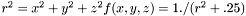
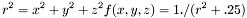
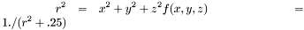
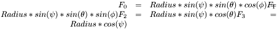
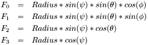
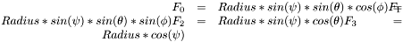
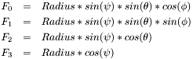

xyz2RGBColorManager Class Reference
[Functionality for defining color schemes]
maps x, y, z in parameter space to R, G, B
More...
#include <ColorManager.H>
Inheritance diagram for xyz2RGBColorManager:
Collaboration diagram for xyz2RGBColorManager:
Public Member Functions | |
| xyz2RGBColorManager (Function *_f) | |
| Given a Function to manage, construct a xyz2RGBColorManager. | |
| virtual void | setFunction (Function *_f) |
| set the managed Function | |
| virtual void | calibrateColor (const VecMath::Vector< 4 > &x, const Color &_col=Color()) |
| Point (x, y, z) has color col. This may serve for interpolation. | |
| virtual Color | getColor (const VecMath::Vector< 4 > &x) |
| Find the color of a given point. | |
| virtual void | depthCueColor (double wmax, double wmin, double w, const VecMath::Vector< 4 > &) |
| post-process color at given point to have 4D depth cue | |
| virtual std::string | getContents () |
| debugging output | |
Private Member Functions | |
| Color | computeColorFromNeighbors (const VecMath::Vector< 4 > &x) |
| Interpolate the color of a point from the colors of its neighbors. | |
| std::pair< std::vector < VecMath::Vector < 4 > >, std::vector< double > > | findClosestPoints (const VecMath::Vector< 4 > &, unsigned=5) |
| find the closest points in the map of colors | |
| Color | averageColors (const std::vector< Color > &) |
| Find the average RGBA values from the list of Colors supplied. | |
Private Attributes | |
| colormap | col |
| Here the colors for defined points re stored. | |
Detailed Description
maps x, y, z in parameter space to R, G, B
Constructor & Destructor Documentation
| xyz2RGBColorManager::xyz2RGBColorManager | ( | Function * | _f | ) | [inline] |
Member Function Documentation
| virtual void xyz2RGBColorManager::setFunction | ( | Function * | _f | ) | [inline, virtual] |
set the managed Function
- Parameters:
-
_f new Function to manage
References col, and ColorManager::setFunction().
Here is the call graph for this function:
| virtual Color xyz2RGBColorManager::getColor | ( | const VecMath::Vector< 4 > & | x | ) | [virtual] |
Find the color of a given point.
- Parameters:
-
x four-dimensional coordinate for which the color is sought
Implements ColorManager.
| Color xyz2RGBColorManager::computeColorFromNeighbors | ( | const VecMath::Vector< 4 > & | x | ) | [private] |
Interpolate the color of a point from the colors of its neighbors.
The RGBA values are interpolated from a list of five neighboring points, because in four dimensions you need five points to enclose a given point.
This gives 10 values:

The interpolated  value is the average of the temporary values.
Analogous for  in ,  in , and  in
in , and  in  .
.
- Parameters:
-
x four-dimensional coordinate for which the color is sought
References averageColors(), col, and findClosestPoints().
Here is the call graph for this function:
| std::pair< vector< Vector< 4 > >, vector< double > > xyz2RGBColorManager::findClosestPoints | ( | const VecMath::Vector< 4 > & | x, | |
| unsigned | num = 5 | |||
| ) | [private] |
find the closest points in the map of colors
- Parameters:
-
x point whose neighbors are wanted num number of neighboring points
- Returns:
- two vectors containing the closest points and their distances to x
References col.
Referenced by computeColorFromNeighbors().
Here is the caller graph for this function:
The documentation for this class was generated from the following files:
- HyperspaceExplorer/src/ColorManager.H
- HyperspaceExplorer/src/ColorManager.C